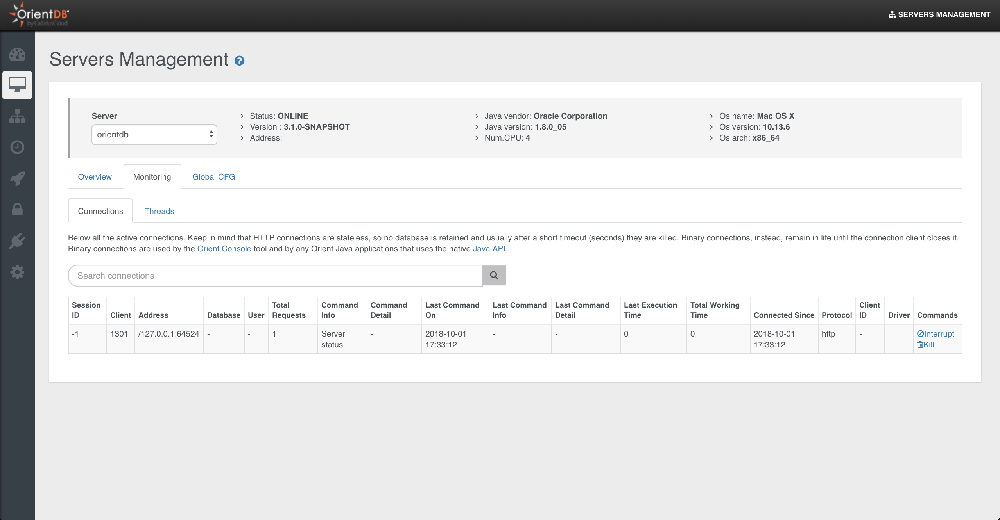
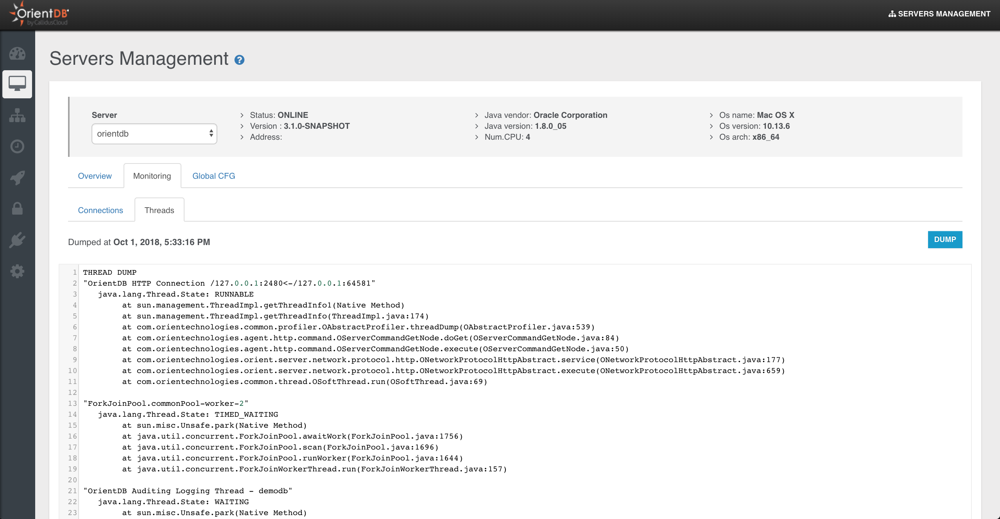
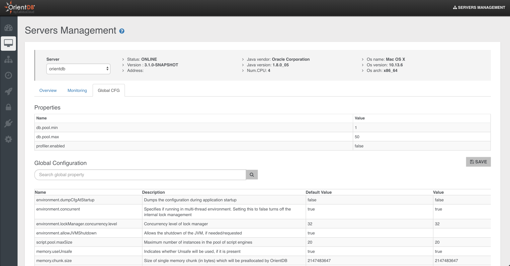

Server Management
This is the section to work with OrientDB Server as DBA/DevOps with Enterprise Edition.
Only users with grant
server.metricscan see this section
This page contains detailed information about the selected node.
General information are:
Number of CPUsStatus of the nodeJava informationOS informationOrientDB version
Then 3 sub-sections are available:
- Overview
- Monitoring
- Global Configuration
Overview
This page summarizes all the most important information about the current server:
Server statusOperationsActive SessionsCPU,RAMandDISKusedLive chartwith CRUD operations in real-time

Monitoring
Connections
Displays all the active sessions to the server. Each session reports the following information:
Session ID, as the unique session numberClient, as the unique client numberAddress, is the connection sourceDatabase, the database name usedUser, the database userTotal Requests, as the total number of requests executed by the connectionCommand Info, as the running commandCommand Detail, as the detail about the running commandLast Command On, is the last time a request has been executedLast Command Info, is the information about last operation executedLast Command Detail, is the information about the details of last operation executedLast Execution Time, is the execution time o last requestTotal Working Time, is the total execution time taken by current connection so farConnected Since, is the date when the connection has been createdProtocol, is the protocol between HTTP and BinaryClient ID, a text representing the client connectionDriver, the driver name
Each session can be interrupted or even killed.

Threads
This panel show the thread dump of the selected server.

Global CFG
This panel shows the Server settings divided in two boxes:
Properties, as the custom settings inconfig/orientdb-server-config.xmlfileGlobal Configuration, as all the global configuration. Only few of them can be changed at run-time with the "Save" button
